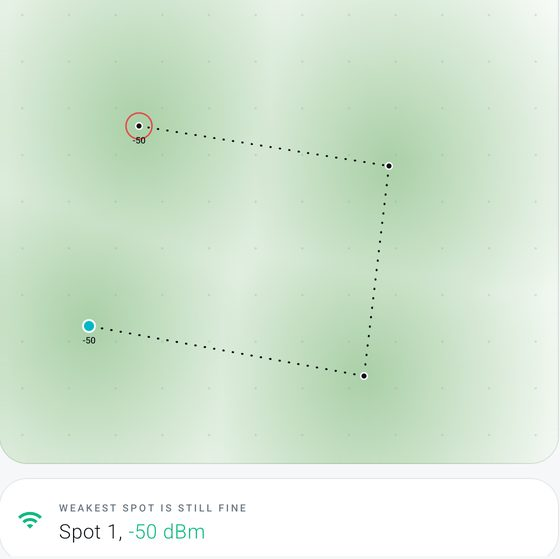

Make a WiFi heat map of your home
A WiFi heat map shows where in your home the signal is strong and where it fades. With an Android phone you can build a simple one in a few minutes by walking through the rooms and tapping where you stand. This guide explains how it works, what the colours mean and what to do about weak spots.

What a WiFi heat map tells you
WiFi signal strength is measured in dBm. The numbers are negative, and closer to zero means stronger. As rules of thumb, around -50 dBm is very strong, around -70 dBm is usually still fine for browsing and video, and -80 dBm or lower is weak. These are not exact limits. Concrete, brick and metal generally block WiFi more than wood or plasterboard.
A heat map turns many readings into colours, so you can see weak spots at a glance instead of reading numbers. Distance, walls, floors and metal objects all reduce the signal, which is why one room can be fine and the next one poor.
How to make the map with the app
- Connect your phone to your WiFi and open the Walk screen of Ultimate Network Troubleshooter.
- Stand where you want to start and tap that spot on the map.
- Walk to the next spot, for example the next room, and tap where you stand. Repeat in every room where you use WiFi.
- The app measures the signal at each spot you tap and fills in the colours between them.
- A card under the map names your weakest spot and its signal, with a short verdict such as "Weakest spot is still fine".
The colours between your taps are interpolated, which means estimated from the spots you measured. Tap more spots for a more reliable picture, especially along long corridors. Walls and floors affect the signal, so a house with several floors is easier to read if you walk each floor separately.

What the colours mean
In the app, mint green means a strong signal, amber a fair one and coral a weak one. Look for the amber and coral patches: those are the places where video calls tend to stutter or pages stall.
Tips for a useful map
- Hold the phone the way you normally use it and walk at an ordinary pace.
- Tap at the places where you really use WiFi, such as the sofa, the desk and the bed, not only in corridors.
- Measure with the router in its normal place, and measure again after you move it.
- Walk the same route after every change, so you can compare the weakest spot before and after.
- A strong signal is not the same as a fast connection. Run a speed test at a weak spot too.
Fixing weak spots
Start with the router. A central, raised, open position away from metal objects, thick walls and appliances usually helps. If a spot is simply too far away, an extra access point or a mesh system can cover it. Check the channel as well, using the best WiFi channel guide.
If your home has more than one access point, the app's WiFi screen groups networks with the same name into physical boxes and can flag a sticky connection, where a phone clings to a far box instead of moving to a nearer one.
A phone-based heat map is a rough guide, not a professional site survey. It shows your walking path and measured spots, not a drawing of your rooms.
Frequently asked questions
Does the walk need location access?
Yes. Android requires precise location permission before any app may list nearby WiFi networks and read their signal. The app uses it on your phone only.
How many spots do I need to tap?
There is no fixed number. Tap at least one spot per room, and more along long corridors. More spots make the colours between them more reliable.
Does a green map mean fast WiFi?
No. Green means a strong signal at that spot. Real speed also depends on your internet plan, the router, how crowded the channel is and your device, so run a speed test as well.